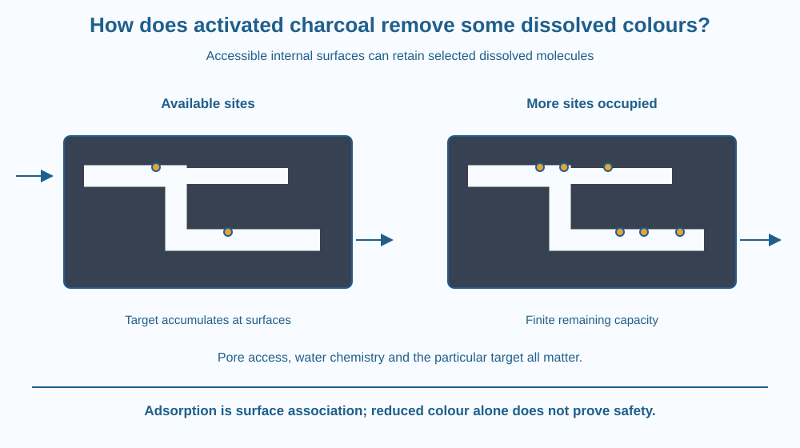

Explain why a porous carbon material can remove some dissolved substances that pass through an ordinary mesh. Distinguish adsorption from absorption and size filtration. Predict why contact conditions and finite capacity matter, and avoid treating colour removal as proof of drinking-water safety.
A coloured solution passes through a kitchen mesh and keeps its colour. In a suitable treatment system, contact with activated carbon may reduce some colour even though the colouring material was dissolved.
How can this work if a mesh did not catch the molecules? The carbon provides surfaces to which some dissolved substances can associate. Its many internal pores create accessible surface area within the material.
The process therefore asks a different question from “Is this particle too large to fit through an opening?” It asks how molecules interact with a surface.
Activated carbon is a carbon-rich material processed to develop an extensive pore structure. The pores expose internal surfaces. A grain can therefore provide much more accessible surface than its smooth outer outline alone suggests.
Adsorption is the accumulation of substances at a surface. In this example, certain dissolved molecules associate with carbon surfaces rather than remaining entirely in the passing water. The solid is the adsorbent, and the substance held at its surface is the adsorbate.
This differs from absorption, in which a substance enters the bulk of another material. Everyday language sometimes uses the words loosely. The surface-focused definition matters here because it explains why internal area and surface properties influence performance.
An ordinary mesh mainly retains suspended objects based on their size and shape relative to openings. A dissolved dye can pass through because it is not present as a large grain. Adsorption can still remove some of those molecules if their interactions with the carbon surface are favourable.
Not every colour or contaminant is adsorbed equally. Molecular properties, pore accessibility, water chemistry and the particular carbon all affect the result. “Carbon removes dissolved substances” is too broad unless the target and conditions are specified.
Contact time matters because molecules need access to available surfaces. Water passing too quickly through a poorly arranged system may leave before enough contact occurs. However, a longer time is not a guarantee of complete removal of every target.
The material also has a finite capacity. As accessible sites become occupied, more of a target can pass through. This is called breakthrough in treatment contexts. A device can look unchanged while its ability to retain a particular substance has declined.
Activated carbon is not equivalent to ordinary charcoal from an unknown fire. Preparation, contamination and surface structure differ. Nor is it a universal disinfection method. Removing a visible colour does not prove removal of microbes, dissolved salts or every harmful compound.
Draw a winding corridor inside a carbon grain. Put small attachment sites on the walls and target molecules in the passing water. Some molecules attach while others continue through.
Make a second drawing with many sites occupied. The same flow can now carry more unretained target out. This model connects limited capacity with a change in output that might not be obvious from the carbon's appearance.
The sites are simplified symbols, not identical hooks manufactured at fixed intervals. Real surface interactions vary. The useful idea is that contact and available surface properties matter, rather than the carbon physically swallowing every molecule that enters its pores.
The SVG shows a carbon grain with a cutaway pore network. Coloured molecule symbols approach internal surfaces, and some remain associated with the walls. An outlet arrow carries the remaining water and unretained molecules onward.
A second pore section has more occupied sites and illustrates reduced remaining capacity. Labels distinguish adsorption at surfaces from bulk absorption and mechanical mesh filtration.
The drawing is not a scale view of pores or a performance claim for a real filter cartridge. It deliberately shows some molecules passing through so the mechanism is not confused with perfect removal or proof of safety.

Activated carbon is used in some water-treatment and air-treatment systems for selected substances. A product's intended targets and maintenance instructions matter because different media and designs have different capabilities.
In an Indian household purifier, a carbon stage may have a different role from a membrane stage or a disinfection stage. One component should not be credited with all the work of the system. The lesson explains a mechanism without recommending a particular purifier or replacement interval.
A faded coloured liquid is a useful visual observation but an incomplete analysis. It says something about the colour under the test conditions, not everything about the liquid's biological or chemical quality.
Use paper and two coloured pencils. Do not grind charcoal or handle dusty carbon powders, and do not attempt to purify drinking water.
Ask a partner why the second drawing may release more target despite having the same visible grain shape. The activity models capacity and surface contact. It does not establish that a particular food colour will be adsorbed or that a homemade device is suitable for consumption.
Suppose two carbon grains have the same external size but different internal pore networks. Why could their adsorption behaviour differ?
Now imagine a target molecule too large to access many of the internal passages. Explain why total internal surface area alone might overstate the surface actually available to that target. Accessibility and interaction strength belong in the explanation alongside area.
What is adsorption?
Answer: B — Adsorption involves association at surfaces, including internal pore surfaces.
Why does activated carbon not remove every substance equally?
Answer: C — Molecular properties, pore access and water chemistry influence retention.
A liquid loses visible colour after carbon contact. What can you conclude?
Answer: A — A visible colour change does not test every biological and chemical hazard.
Design an explanatory label for a carbon-treatment demonstration. It must state the target, describe surface adsorption, and identify an observation that would suggest declining capacity.
Include a limitation saying that loss of visible colour does not certify drinking-water safety. Your label should distinguish what the demonstration directly shows from wider claims requiring specific testing, without pretending that a fine mesh and an adsorbent are interchangeable devices.
A material's useful surface can lie mostly inside it. A porous grain may provide many contact regions invisible from its outer silhouette. Understanding internal access helps explain why two similarly sized grains need not perform alike and why a used adsorbent may look unchanged while its available capacity differs.
Activated carbon can adsorb selected dissolved substances onto accessible internal surfaces, but contact, capacity and target chemistry limit its performance.